Thermodynamics vs. Heat Transfer
COMPARISON · ENERGY QUANTITIES vs. RATESيهتم علم Thermodynamics بتحديد كمية الطاقة المنتقلة وحفظ الطاقة (Conservation of Energy)، لكنه لا يحدد الزمن الذي تستغرقه عملية الانتقال.
يدرس علم Heat Transfer معدل انتقال الحرارة، ويُعبَّر عنه رياضيًا بالمعادلة:
وبالتالي يمكن لعلم Heat Transfer تحديد:
- مدى سرعة التسخين أو التبريد (how fast heating/cooling occurs).
- الزمن الذي تستغرقه العملية (how long a process takes).
- كيف تتغير درجة الحرارة مع الزمن (how temperature changes with time).
يمكن لعلم Thermodynamics تحديد كمية الحرارة المفقودة عندما يبرد كوب قهوة ساخن من \(90^\circ C\) إلى \(80^\circ C\)، لكن علم Heat Transfer هو الذي يحدد كم من الوقت يستغرق هذا التبريد.
Thermodynamics → How much energy? (كم من الطاقة؟)
Heat Transfer → How fast is the energy transferred? (ما مدى سرعة انتقال الطاقة؟)
يتعامل Thermodynamics أساسًا مع حالات الاتزان (equilibrium states)، بينما Heat Transfer ظاهرة لا اتزانية (nonequilibrium phenomenon) لأن انتقال الحرارة يتطلب وجود فرق في درجة الحرارة.
Heat and the Driving Force for Heat Transfer
TEMPERATURE DIFFERENCE · TEMPERATURE GRADIENTالحرارة هي شكل من أشكال الطاقة ينتقل دائمًا تلقائيًا من المنطقة ذات higher temperature إلى المنطقة ذات lower temperature، ويتوقف الانتقال عندما يصل النظامان إلى thermal equilibrium (نفس درجة الحرارة).
فرق درجة الحرارة (Temperature Difference) هو القوة الدافعة (Driving Force) لانتقال الحرارة، وذلك بالتشابه مع:
- Voltage Difference → القوة الدافعة للتيار الكهربائي.
- Pressure Difference → القوة الدافعة لسريان المائع.
Temperature Gradient
يعتمد معدل انتقال الحرارة على الـTemperature Gradient:
كلما زاد Temperature Gradient، زاد معدل انتقال الحرارة في ذلك الاتجاه.
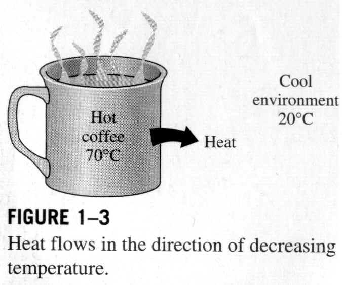
Thermodynamic Laws in Heat Transfer
FIRST LAW · SECOND LAWيوفر First Law إطار توازن الطاقة (Energy-Balance Framework) الذي يُستخدم في تحليل Heat Transfer.
Basic Mechanisms of Heat Transfer
CONDUCTION · CONVECTION · RADIATIONتوجد ثلاثة أنماط (modes) أساسية لانتقال الحرارة، وجميعها تتطلب وجود Temperature Difference، وتنقل الطاقة من high-temperature medium إلى low-temperature medium:
يحدث Conduction عبر تفاعلات بين الجسيمات (particle-to-particle interactions) ولا يتطلب حركة إجمالية للمادة (bulk motion). وهو مهم في المواد الصلبة (solids) لكنه يحدث أيضًا في السوائل والغازات.
يتطلب Convection وجود مائع متحرك (moving fluid) ويجمع بين Conduction بالقرب من السطح وحركة المائع (fluid motion) التي تنقل الطاقة.
ينتقل Radiation عبر الموجات الكهرومغناطيسية (electromagnetic waves) أو الفوتونات (photons)، وعلى عكس Conduction وConvection، لا يحتاج إلى وسط مادي (material medium).
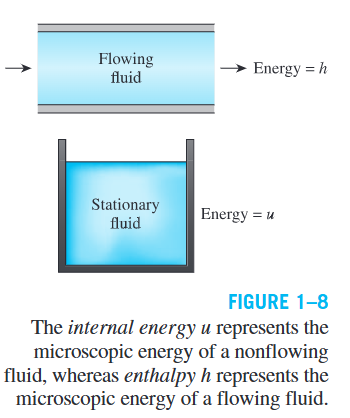
Heat Transfer in Real Systems & Applications
SIMULTANEOUS MECHANISMS · ENGINEERING APPLICATIONSفي الأنظمة العملية، يمكن أن تعمل الآليات الثلاث في وقت واحد. فمثلاً، الحرارة المغادرة لسطح مُسخَّن قد تشمل:
- Conduction عبر جدار صلب.
- Convection بين الجدار والهواء المحيط.
- Radiation من الجدار إلى الأجسام المحيطة.
لذلك، مسائل Heat Transfer الحقيقية غالبًا تحتاج تحليلًا لأكثر من نمط واحد.
Application Areas of Heat Transfer
يدخل Heat Transfer في العديد من الأنظمة الهندسية والعمليات اليومية:
- جسم الإنسان: يفقد حرارة باستمرار إلى المحيط، والراحة الحرارية (Thermal Comfort) تعتمد بشدة على معدل فقد الحرارة.
- أنظمة التدفئة والتكييف (HVAC).
- الثلاجات والمجمدات (Refrigerators & Freezers).
- سخانات المياه (Water Heaters).
- الأجهزة الإلكترونية والحواسيب (Computers & Electronic Equipment).
- مشعات السيارات (Car Radiators).
- المجمعات الشمسية (Solar Collectors).
- محطات توليد الطاقة (Power Plants).
- المركبات الفضائية (Spacecraft).
يُستخدم تحليل Heat Transfer لتقليل فقد الحرارة في الشتاء واكتساب الحرارة في الصيف، وتحديد السمك الأمثل للعزل (insulation thickness) للجدران والأسطح والأنابيب وسخانات المياه. تصميم العزل ليس حراريًا فقط؛ بل يأخذ في الاعتبار الجوانب الاقتصادية أيضًا لأن زيادة سمك العزل لها تكلفة.
Core Heat-Transfer Laws
| Mode | Fundamental Relation |
|---|---|
| Conduction | Fourier's Law of Heat Conduction |
| Convection | Newton's Law of Cooling |
| Radiation | Stefan–Boltzmann Law of Radiation |
Historical Understanding of Heat
KINETIC THEORY · CALORIC THEORY · RUMFORD & JOULEبحلول منتصف القرن التاسع عشر، قدمت Kinetic Theory التفسير الفيزيائي الصحيح للحرارة: تُعامل الجزيئات كجسيمات في حركة مستمرة تمتلك kinetic energy.
Caloric Theory — مفهوم تاريخي
قبل قبول التفسير الحركي، كانت النظرية السائدة هي Caloric Theory التي اقترحها Antoine Lavoisier عام 1789:
- اعتبرت الحرارة مائعًا غير مرئي عديم الكتلة واللون والرائحة يسمى Caloric.
- Caloric ينتقل من الأجسام الأدفأ إلى الأبرد.
- إضافة Caloric → ارتفاع درجة الحرارة. إزالته → انخفاض درجة الحرارة.
رُفضت هذه النظرية لأنها لم تستطع تفسير التوليد المستمر للحرارة بالاحتكاك.
Rumford and Joule
Benjamin Thompson (Count Rumford) أثبت عام 1798 أن الحرارة يمكن توليدها باستمرار عبر الاحتكاك — مما يتناقض مع فكرة أن الحرارة مادة محفوظة.
James P. Joule أجرى تجارب دقيقة نُشرت عام 1843 أثبتت Mechanical Equivalence of Heat: يمكن تحويل الطاقة الميكانيكية/الكهربائية إلى مقدار مكافئ من الطاقة الحرارية. أسهم عمله في تأسيس First Law of Thermodynamics، ووحدة الطاقة Joule (J) سُميت تكريمًا له.
Caloric Theory عفا عليها الزمن علميًا، لكن تطورها التاريخي أسهم في بناء علمي Thermodynamics وHeat Transfer.
Engineering Heat Transfer & Modeling
RATING · SIZING · EXPERIMENTAL · ANALYTICAL · MATHEMATICAL MODELINGيُستخدم تحليل Heat Transfer بشكل أساسي في تصميم معدات مثل: Heat Exchangers، Boilers، Condensers، Radiators، Furnaces، Refrigerators، وSolar Collectors.
Rating vs. Sizing Problems
تحديد معدل انتقال الحرارة لنظام موجود عندما يكون فرق درجة الحرارة محددًا.
تحديد الحجم المطلوب لنظام لنقل مقدار/معدل محدد من الحرارة عند فرق درجة حرارة معين.
Experimental vs. Analytical Approach
| المعيار | Experimental Approach | Analytical Approach |
|---|---|---|
| الطريقة | اختبار وقياس على النظام الفعلي | تحليل ونماذج رياضية/عددية |
| المميزات | تتعامل مع النظام الحقيقي مباشرة | أسرع وأقل تكلفة، تُطبَّق قبل وجود النظام |
| العيوب | مكلفة، تستغرق وقتًا، قد تكون غير عملية | تعتمد على دقة الافتراضات والنموذج |
Mathematical Modeling Procedure
Step 1 — Formulate the Problem:
- تحديد جميع المتغيرات المؤثرة بشكل كبير.
- وضع افتراضات وتقريبات معقولة.
- تحديد العلاقة المتبادلة بين المتغيرات.
- تطبيق القوانين الفيزيائية المناسبة وصياغة المشكلة رياضيًا.
Step 2 — Solve and Interpret:
- حل النموذج الرياضي بالطريقة المناسبة.
- تفسير النتائج في سياق المشكلة الفيزيائية الأصلية.
النموذج المعقد جدًا ليس بالضرورة أفضل إذا كان صعبًا أو مكلفًا حله دون ضرورة.
Importance of Assumptions
دقة النتيجة التحليلية تعتمد مباشرة على صلاحية الافتراضات المستخدمة:
- نموذج بسيط وواقعي يمكن أن يعطي نتائج دقيقة كافية للأغراض الهندسية.
- نموذج غير واقعي ينتج نتائج غير دقيقة أو مرفوضة.
- إذا تعارضت النتيجة مع السلوك الفيزيائي، يُحسَّن النموذج بإزالة الافتراضات المشكوك فيها.
Examples of Appropriate Simplification
يمكن تقريب حبة بطاطس أو قطعة لحم مستديرة على أنها spherical solid بخصائص تقترب من خصائص الماء. هذا النموذج بسيط لكنه قد يكون دقيقًا بما يكفي لأغراض عملية كثيرة.
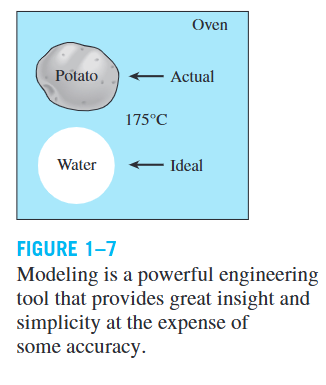
عند تحديد حجم سخان مبنى: تُحسب خسائر الحرارة تحت أسوأ الظروف المتوقعة، ثم يُختار فرن قادر على تعويضها. قد يُختار فرن أكبر قليلًا كهامش أمان أو للتوسع المستقبلي.
Designing for Actual Operating Conditions
يجب اختيار معدات Heat Transfer بناءً على ظروف التشغيل الفعلية/المتوقعة وليس أداء الحالة الجديدة المثالية.
عند تعامل Heat Exchanger مع ماء عسر:
لذلك يجب تصميم/اختيار الـHeat Exchanger مع الأخذ بعين الاعتبار Fouling المتوقع بمرور الوقت.
Energy, Internal Energy & Enthalpy
TOTAL ENERGY · INTERNAL ENERGY · SENSIBLE · LATENT · ENTHALPYForms of Energy
يمكن أن توجد الطاقة بأشكال متعددة: Thermal، Mechanical، Kinetic، Potential، Electrical، Magnetic، Chemical، Nuclear.
مجموع جميع الأشكال هو الطاقة الكلية للنظام:
Internal Energy
Sensible Energy
الجزء من Internal Energy المرتبط بـkinetic energy of molecules يسمى Sensible Energy (Sensible Heat). كلما ارتفعت درجة الحرارة، زادت سرعة/نشاط الجزيئات، وزادت Internal Energy:
تتضمن Internal Energy أيضًا الطاقة المرتبطة بالقوى بين الجزيئات (intermolecular forces).
Latent Energy
القوى بين الجزيئات تكون أقوى في المواد الصلبة وأضعف في الغازات. عند إضافة طاقة كافية للتغلب على هذه القوى، يحدث تغير في الطور (phase change). الطاقة الداخلية المرتبطة بطور النظام تسمى Latent Energy (Latent Heat).
Chemical and Nuclear Energy
- Chemical (Bond) Energy: الطاقة المرتبطة بالروابط بين الذرات داخل الجزيئات. تُمتص أو تُطلق أثناء التفاعلات الكيميائية.
- Nuclear Energy: الطاقة المرتبطة بالروابط داخل نواة الذرة. تُمتص أو تُطلق أثناء التفاعلات النووية.
Enthalpy
حيث \(u\) هي internal energy per unit mass، و \(Pv\) هي flow energy (flow work) اللازمة لدفع المائع والحفاظ على السريان. تُعتبر \(h\) ملائمة لتمثيل microscopic energy لمائع متدفق.
Energy Units
| النظام | الوحدة | التعريف / التحويل |
|---|---|---|
| SI | Joule (J) | \(1\,\text{kJ} = 1000\,\text{J}\) |
| English | Btu | الطاقة اللازمة لرفع حرارة 1 lbm ماء عند \(60^\circ F\) بمقدار \(1^\circ F\) |
| Conversion | — | \(1\,\text{Btu} = 1.055056\,\text{kJ}\) |
| Calorie | cal | \(1\,\text{cal} = 4.1868\,\text{J}\) |
Specific Heats & Properties
IDEAL GAS · cv · cp · INCOMPRESSIBLE SUBSTANCESIdeal Gas Relation
حيث \(P\) الضغط المطلق، \(v\) الحجم النوعي، \(T\) درجة الحرارة المطلقة، \(\rho\) الكثافة، و \(R\) ثابت الغاز. الغازات الحقيقية تقترب من سلوك Ideal Gas عند الكثافة المنخفضة (ضغط منخفض ودرجة حرارة عالية). الغازات الكثيفة مثل البخار قرب التشبع أو بخار المبردات لا تُقرَّب كغازات مثالية.
Specific Heat
الطاقة اللازمة لرفع حرارة وحدة الكتلة درجة واحدة عند ثبات الحجم
الطاقة اللازمة لرفع حرارة وحدة الكتلة درجة واحدة عند ثبات الضغط
بشكل عام: \(c_p > c_v\) لأن عند ثبات الضغط تتمدد المادة ويُستهلك جزء من الطاقة في شغل التمدد.
الوحدات الشائعة: kJ/(kg·K) أو kJ/(kg·°C)، وهما متكافئتان عدديًا لأن \(\Delta T(K) = \Delta T(^\circ C)\).
Specific Heat Dependence
- بشكل عام، تعتمد Specific Heats على درجة الحرارة والضغط.
- لـIdeal Gas: تعتمد على درجة الحرارة فقط.
- عند الضغط المنخفض، الغازات الحقيقية تقترب من السلوك المثالي.
Incompressible Substances
المواد الصلبة والسوائل يمكن تقريبها عادةً على أنها incompressible. وفي هذه الحالة:
Energy Transfer & First Law of Thermodynamics
HEAT · WORK · ENERGY BALANCE · CLOSED SYSTEMS · STEADY-FLOW · SURFACEEnergy Transfer Mechanisms
يمكن للطاقة أن تعبر حدود النظام بآليتين أساسيتين:
تفاعل طاقي ناتج عن فرق في درجة الحرارة.
أي تفاعل طاقي ليس مدفوعًا بفرق درجة الحرارة (مثل مكبس متحرك، عمود دوار، تيار كهربائي).
Heat Transfer Rate & Heat Flux
Heat Flux يمكن أن يتغير مع الزمن والموقع على السطح.
Given
Solution
Mass of the copper ball:
(a) Total heat transfer:
(b) Average rate of heat transfer:
(c) Average heat flux:
Heat Flux قد يتغير مع الموقع على السطح. القيمة المحسوبة هي المتوسط على كامل سطح الكرة.
First Law of Thermodynamics — Energy Balance
عندما تكون العملية مستقرة (steady)، تكون \(\Delta E_{system} = 0\):
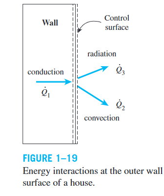
في تحليل Heat Transfer حيث نهتم فقط بأشكال الطاقة القابلة للانتقال بسبب فرق الحرارة:
Energy Balance for Closed Systems
لنظام مغلق ساكن (stationary closed system):
وعندما لا يوجد شغل عبر الحدود:
Energy Balance for Steady-Flow Systems
في Steady-Flow Systems مثل سخانات المياه ومشعات السيارات:
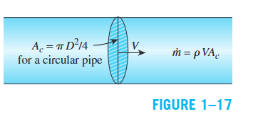
عند إهمال التغيرات في الطاقة الحركية والكامنة وعدم وجود شغل:
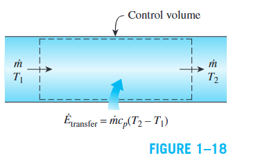
Surface Energy Balance
السطح لا يحتوي حجمًا أو كتلة، وبالتالي لا يخزن طاقة. لذلك:
مثال: على السطح الخارجي لجدار منزل:
حيث \(\dot{Q}_1\) = conduction عبر الجدار، \(\dot{Q}_2\) = convection إلى الهواء الخارجي، \(\dot{Q}_3\) = net radiation إلى المحيط.
Given
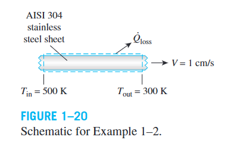
Solution
الشريحة تُعامل كـsteady-flow control volume. يتم تقييم \(c_p\) عند \(T_{avg} = (500+300)/2 = 400\,K\).
Mass flow rate:
Rate of heat loss:
Conduction — Fourier's Law
MECHANISM · FACTORS · FOURIER'S LAW · HEAT TRANSFER AREAيمكن أن يحدث في Solids، Liquids، وGases.
Mechanism of Conduction
- في Gases & Liquids: يحدث بسبب collisions and diffusion of molecules أثناء الحركة العشوائية.
- في Solids: يحدث بسبب molecular lattice vibrations بالإضافة إلى نقل الطاقة بواسطة free electrons.
Factors Affecting the Rate of Conduction
معدل Heat Conduction يعتمد على:
- Temperature Difference \(\Delta T\) عبر المادة: كلما زاد، زاد المعدل.
- Heat Transfer Area \(A\): كلما زادت المساحة، زاد المعدل.
- Thickness \(L\): كلما زاد السمك، قل المعدل.
- Thermal Conductivity \(k\): كلما زادت، زادت قدرة المادة على توصيل الحرارة.
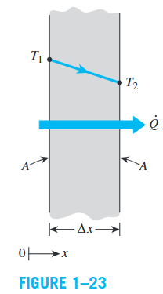
Fourier's Law of Heat Conduction
لـsteady heat conduction خلال plane layer:
حيث:
- \(k\): Thermal Conductivity (الموصلية الحرارية).
- \(A\): Heat Transfer Area (المساحة العمودية على اتجاه انتقال الحرارة).
- \(T_1, T_2\): درجات الحرارة على الجانبين.
- \(\Delta x\): السمك.
- \(\dfrac{dT}{dx}\): Temperature Gradient — ميل منحنى \(T\text{-}x\).
إذا كانت درجة الحرارة تقل مع زيادة \(x\)، فإن \(\frac{dT}{dx} < 0\). الإشارة السالبة (negative sign) في Fourier's Law تضمن أن heat transfer في اتجاه \(+x\) يكون موجبًا.
Heat conduction occurs in the direction of decreasing temperature.
Heat Transfer Area
مساحة Heat Transfer Area \(A\) تكون دائمًا عمودية على اتجاه انتقال الحرارة. إذا كان لدينا جدار أبعاده \(5\,m \times 3\,m \times 0.25\,m\)، فإن:
السمك لا يدخل في حساب \(A\).
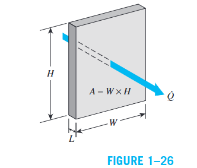
Given
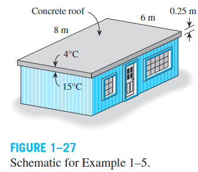
Solution
Roof area:
(a) Rate of heat loss:
(b) Cost of heat loss:
تكلفة فقد الحرارة عبر السقف خلال تلك الليلة تساوي تقريبًا \(\$1.35\). التكلفة الكلية للتدفئة ستكون أكبر لأن خسائر الحرارة عبر الجدران لم تُحسب.
Thermal Conductivity & Thermal Diffusivity
k VALUES · VARIATION · GASES · LIQUIDS · SOLIDS · α = k/ρcp\(k\) عالية → المادة موصلة جيدة للحرارة. \(k\) منخفضة → المادة عازلة (insulator).
\(c_p\) → قدرة المادة على store thermal energy.
\(k\) → قدرة المادة على conduct heat.
Typical Thermal Conductivity Values
| Material | \(k\) (W/m·K) |
|---|---|
| Diamond | 2300 |
| Silver | 429 |
| Copper | 401 |
| Aluminum | 237 |
| Iron | 80.2 |
| Glass | 0.78 |
| Water | 0.607 |
| Wood | 0.17 |
| Glass Fiber | 0.043 |
| Air | 0.026 |
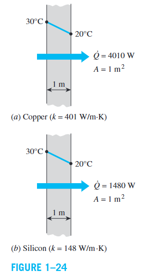
بشكل عام:
Thermal Conductivity of Gases
طبقًا لـKinetic Theory:
حيث \(T\) درجة الحرارة الثرموديناميكية و\(M\) الكتلة المولية. إذن: زيادة \(T\) → زيادة \(k\)، وزيادة \(M\) → انخفاض \(k\). مثال: عند \(1000\,K\): \(k_{He} = 0.343\,W/m{\cdot}K\) بينما \(k_{air} = 0.0667\,W/m{\cdot}K\) لأن الكتلة المولية للهيليوم أقل بكثير.
Thermal Conductivity للغازات تكون تقريبًا مستقلة عن الضغط عبر مدى واسع من الضغوط العملية.
Thermal Conductivity of Liquids
- \(k\) لا تتأثر كثيرًا بالضغط إلا بالقرب من Thermodynamic Critical Point.
- معظم السوائل: زيادة درجة الحرارة → انخفاض \(k\). الماء استثناء ملحوظ.
- زيادة الكتلة المولية → انخفاض \(k\).
- Liquid Metals مثل الزئبق والصوديوم لها \(k\) مرتفعة وتصلح للتطبيقات ذات معدل انتقال حرارة عالٍ.
Thermal Conductivity of Solids
في المواد الصلبة، Conduction ينتج من مكونين:
- Lattice Vibrational Component: ناتج عن اهتزازات الجزيئات في الشبكة البلورية.
- Electronic Component: ناتج عن نقل الطاقة بواسطة الإلكترونات الحرة — المساهم الرئيسي في Pure Metals.
Diamond له أعلى Thermal Conductivity تقريبًا عند درجة حرارة الغرفة بسبب بنيته البلورية المنتظمة للغاية.
Thermal Conductivity of Alloys
Thermal Conductivity للسبيكة (alloy) عادةً تكون أقل بكثير من قيمة أي من المعادن النقية المكونة لها. حتى كمية صغيرة من الذرات الغريبة تعرقل انتقال الطاقة داخل الشبكة المعدنية.
| Material | \(k\) at 300 K (W/m·K) |
|---|---|
| Copper | 401 |
| Nickel | 91 |
| Constantan (55% Cu, 45% Ni) | 23 |
| Aluminum | 237 |
| Commercial Bronze (90% Cu, 10% Al) | 52 |
| Iron | 83 |
| Chromium | 95 |
| Steel (1% Cr) | 62 |
Effect of Temperature on \(k\)
يختلف \(k\) مع درجة الحرارة. من الشائع تقييمه عند Average Temperature ثم معاملته كثابت:
عند درجات قريبة من absolute zero، بعض المواد الصلبة تُظهر زيادات هائلة في \(k\) (مثل النحاس: \(k_{max} \approx 20{,}000\,W/m{\cdot}K\) عند \(20\,K\)).
Isotropic vs. Anisotropic Materials
عادةً نفترض أن المادة isotropic (خواصها منتظمة في جميع الاتجاهات). لكن مواد مثل laminated composites وwood قد تكون anisotropic:
Thermal Diffusivity
- \(k\) → قدرة المادة على conduct heat.
- \(\rho c_p\) → قدرة المادة على store energy per unit volume.
- High \(\alpha\) → الحرارة تنتشر بسرعة.
- Small \(\alpha\) → معظم الحرارة تُمتص/تُخزن ويمر جزء صغير منها.
| Material | \(\alpha\) (×10⁻⁶ m²/s) at 20°C |
|---|---|
| Silver | 149 |
| Gold | 127 |
| Copper | 113 |
| Aluminum | 97.5 |
| Iron | 22.8 |
| Concrete | 0.75 |
| Water | 0.14 |
| Beef | 0.14 |
| Wood (Oak) | 0.13 |
Beef وWater لهما تقريبًا نفس Thermal Diffusivity لأن اللحم ومعظم الخضراوات والفواكه الطازجة تتكون أساسًا من الماء.
Given
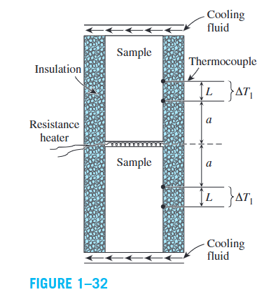
Solution
Electrical power:
Heat through each sample (thermal symmetry):
Cross-sectional area:
Thermal conductivity from Fourier's law:
استخدام عينتين متماثلتين يسمح بالتحقق من القياسات، ويحقق Thermal Symmetry، ويقلل Experimental Error.
Convection — Newton's Law of Cooling
MECHANISM · FORCED · NATURAL · NEWTON'S LAW · h COEFFICIENTكلما زادت حركة المائع (fluid motion)، زاد Convection Heat Transfer. في غياب الحركة الإجمالية للمائع (bulk fluid motion)، يكون الانتقال بواسطة Pure Conduction فقط.
How Convection Occurs
عند تبريد كتلة ساخنة (hot block) بواسطة هواء بارد:
- تنتقل الحرارة أولاً من السطح الصلب إلى طبقة الهواء المجاورة بواسطة Conduction.
- ثم تُحمل الحرارة بعيدًا عن السطح بواسطة حركة المائع (fluid motion).
- الهواء الساخن القريب من السطح يُستبدل بهواء أبرد، فيستمر Heat Transfer.
Types of Convection
يحدث عندما يُجبر المائع على الحركة بواسطة وسيلة خارجية مثل fan أو pump أو wind.
يحدث عندما تنشأ حركة المائع بسبب buoyancy forces الناتجة عن اختلاف الكثافة بسبب تغيرات درجة الحرارة.
عمليات تغير الطور (Phase Change) تُعتبر أيضًا Convection بسبب حركة المائع المصاحبة: فقاعات البخار ترتفع أثناء Boiling، وقطرات السائل تسقط أثناء Condensation.
Newton's Law of Cooling
حيث:
- \(h\): Convection Heat Transfer Coefficient \((W/m^2{\cdot}K)\)
- \(A_s\): مساحة السطح التي يحدث عبرها Convection.
- \(T_s\): درجة حرارة السطح.
- \(T_\infty\): درجة حرارة المائع بعيدًا عن السطح بما يكفي.
\(h\) ليس خاصية للمائع. هو معامل يُحدَّد تجريبيًا ويعتمد على: surface geometry، طبيعة حركة المائع، خصائص المائع، وbulk fluid velocity.
Typical Values of \(h\)
| Type of Convection | \(h\) (W/m²·K) |
|---|---|
| Free convection of gases | 2 – 25 |
| Free convection of liquids | 10 – 1,000 |
| Forced convection of gases | 25 – 250 |
| Forced convection of liquids | 50 – 20,000 |
| Boiling and condensation | 2,500 – 100,000 |
Given
Solution
Heat generated by resistance heating:
Surface area of the wire:
Convection coefficient from Newton's law:
هذا الإعداد البسيط يمكن استخدامه لتحديد average heat transfer coefficients لأسطح مختلفة. ويمكن تقليل تأثير Radiation بجعل الأسطح المحيطة عند درجة حرارة قريبة من درجة حرارة السلك.
Radiation — Stefan–Boltzmann Law
THERMAL RADIATION · BLACKBODY · EMISSIVITY · ABSORPTIVITY · NET RADIATIONفي Heat Transfer نهتم بـThermal Radiation — الإشعاع الصادر من الأجسام بسبب درجة حرارتها. كل جسم عند درجة حرارة أعلى من absolute zero يصدر Thermal Radiation. وهذا هو سبب وصول طاقة الشمس إلى الأرض عبر الفضاء.
Stefan–Boltzmann Law
أقصى معدل إشعاع يمكن أن ينبعث من سطح عند درجة حرارة ثرموديناميكية \(T_s\):
حيث \(\sigma = 5.670 \times 10^{-8}\,W/m^2{\cdot}K^4\) هو Stefan–Boltzmann Constant.
Emissivity and Real Surfaces
الأسطح الحقيقية تصدر إشعاعًا أقل من Blackbody عند نفس درجة الحرارة:
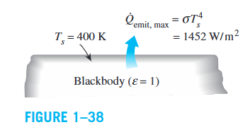
Absorptivity
Kirchhoff's Law of Radiation
عند درجة حرارة وطول موجي معينين:
في كثير من التطبيقات العملية، عندما تكون درجة حرارة السطح ودرجة حرارة مصدر الإشعاع من نفس الرتبة:
Table of Emissivities at 300 K
| Material | Emissivity ε |
|---|---|
| Aluminum foil | 0.07 |
| Anodized aluminum | 0.82 |
| Polished copper | 0.03 |
| Polished silver | 0.02 |
| Black paint | 0.98 |
| White paint | 0.90 |
| Human skin | 0.95 |
| Red brick | 0.93 – 0.96 |
| Water | 0.96 |
| Wood | 0.82 – 0.92 |
| Soil | 0.93 – 0.96 |
Net Radiation with Large Surrounding Surface
عندما يكون سطح ذو emissivity \(\varepsilon\) محاطًا بالكامل بسطح أكبر بكثير عند \(T_{surr}\):
في حسابات Radiation يجب دائمًا استخدام Thermodynamic (Absolute) Temperatures بوحدة الكلفن \((K)\).
Combined Convection + Radiation
Radiation يحدث بالتوازي مع Convection على سطح محاط بغاز:
للتبسيط، نعرّف Combined Heat Transfer Coefficient:
Radiation عادةً تكون مهمة مقارنة بـConduction وNatural Convection، لكنها غالبًا مهملة مقارنة بـForced Convection خاصة عند low emissivities وlow to moderate temperatures.
Given
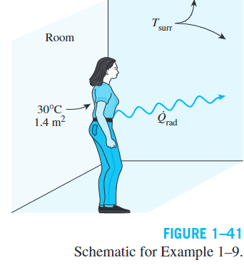
Solution
Winter:
Summer:
معدل فقد الحرارة بالإشعاع في الشتاء يقارب أربعة أضعاف الصيف، وهذا يفسر شعورنا بالبرد في الشتاء حتى لو كان Thermostat عند نفس الإعداد.
Simultaneous Heat Transfer Mechanisms
COMBINED MODES · MEDIUM DEPENDENCE · PRACTICAL EXAMPLESليس بالضرورة أن تعمل الآليات الثلاث معًا داخل نفس الوسط. الآلية المسيطرة تعتمد على طبيعة الوسط:
| Medium / Condition | Heat-Transfer Mechanisms |
|---|---|
| Opaque Solid | Conduction only |
| Semitransparent Solid | Conduction + Radiation |
| Still Fluid (no bulk motion) | Conduction + Radiation |
| Flowing Fluid | Convection + Radiation |
| Vacuum | Radiation only |
مثال: صخرة باردة في بيئة أدفأ:
- Convection ينقل الحرارة من الهواء إلى السطح.
- Radiation ينقل الحرارة من الشمس أو الأسطح المحيطة إلى السطح.
- Conduction ينقل هذه الحرارة من السطح إلى الداخل.
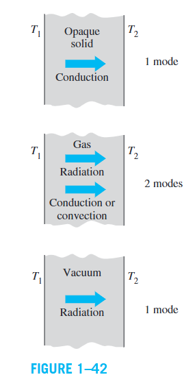
- الغازات عمليًا transparent للإشعاع في معظم الحالات (بعض الغازات مثل Ozone تمتص UV radiation بشدة).
- السوائل عادةً strong absorbers of radiation.
- في Vacuum: Radiation only لأن Conduction وConvection يحتاجان إلى وسط مادي.
Given
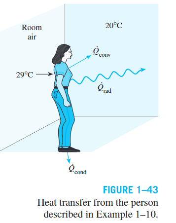
Solution
Convection:
Radiation:
Total heat transfer:
الملابس تعمل كحاجز ضد انتقال الحرارة. Heat conduction through the feet مُهمل لصغره. Heat transfer by perspiration غير محسوب هنا رغم أنه النمط المسيطر في البيئات الحارة.
Given
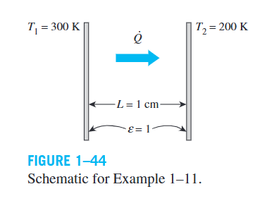
Solution
Air — Conduction + Radiation:
Vacuum — Radiation only:
Urethane insulation — blocks direct radiation:
رغم أن \(k_{urethane} > k_{air}\)، إلا أن Heat Transfer أقل لأن العزل يمنع Radiation.
Superinsulation:
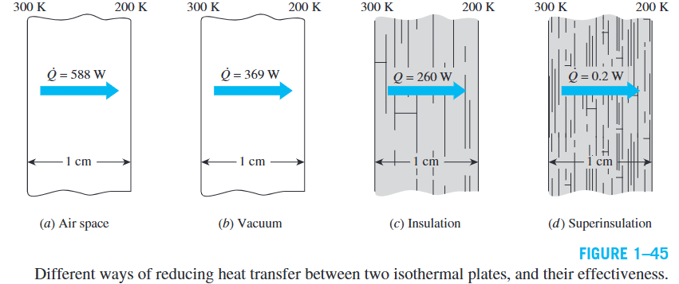
Given
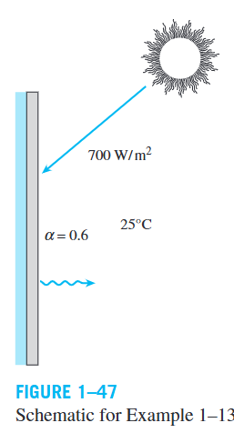
Solution
عند steady operation: الطاقة الممتصة = الطاقة المفقودة:
Solving for \(T_s\):
خسائر الحرارة تمنع درجة حرارة اللوح من الارتفاع فوق \(33.4°C\). استخدام Combined Heat Transfer Coefficient يُسهّل الحسابات عندما تكون قيمته معروفة بدقة معقولة.
Solution
Microwave Oven:
- الطهي يتم بامتصاص electromagnetic radiation من الـMagnetron (ليس Thermal Radiation بل تحويل طاقة كهربائية إلى إشعاع كهرومغناطيسي).
- إشعاع Microwave: ينعكس عن الأسطح المعدنية، يمر عبر الزجاج والسيراميك والبلاستيك، ويُمتص من الطعام (خاصة جزيئات الماء والسكر والدهن).
- الحرارة تنتقل داخل الدجاج بواسطة Conduction، وجزء يُفقد إلى هواء الفرن بـConvection.
Conventional Oven:
- يُسخَّن الهواء أولاً (تسخين مسبق preheating قد يستغرق دقائق).
- تنتقل الحرارة من الهواء إلى سطح الدجاج بواسطة Natural Convection (أو Forced Convection في الأفران الحديثة بمروحة).
- ثم Conduction من الأجزاء الخارجية إلى الداخلية.
فرن Microwave يستبدل عملية Convection البطيئة بـinstantaneous radiation، فينقل الطاقة فورًا دون تسخين مسبق، ويطهو أسرع، ويستهلك طاقة أقل.
Prevention through Design (PtD)
THERMAL BURN · FIRE HAZARD · THERMAL FAILURE · SAFETYالهدف هو منع أو تقليل: الإصابات المرتبطة بالعمل، الأمراض، الأعطال، والأضرار. الحل الهندسي لا يكفي أن يحقق المعادلات الفيزيائية فقط، بل يجب أيضًا أن يحقق معايير PtD الخاصة بالسلامة.
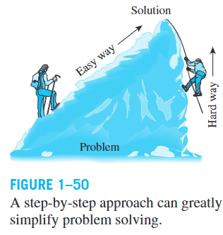
Thermal Burn
يحدث Thermal Burn عند تعرض أنسجة الجلد لدرجات حرارة أعلى من physiological temperature. شدة الإصابة تعتمد على: درجة الحرارة، مدة التعرض (duration of exposure)، ومعدل انتقال الحرارة إلى الجلد.
- فوق \(43°C\): بداية الألم عند التعرض المستمر.
- عند \(\sim 48°C\): احتمال حرق من الدرجة الأولى.
- فوق \(70°C\): ضرر فوري محتمل.
| Mode | كيف يحدث الحرق |
|---|---|
| Conduction | ملامسة سطح صلب ساخن |
| Convection | تعرض لسائل أو غاز ساخن (Scalding) |
| Radiation | تعرض لمصدر إشعاع عالي الطاقة مثل Laser |
Fire Hazard Prevention
- Flash Point ≥ 37.8°C → Combustible Liquid
- Flash Point < 37.8°C → Flammable Liquid
Given
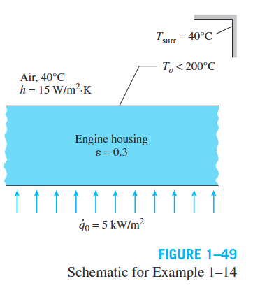
Solution
عند steady operation:
هذه معادلة implicit nonlinear تُحل عدديًا (مثلاً باستخدام EES):
\(279°C > 200°C\) → يوجد خطر اشتعال ذاتي. إحدى وسائل PtD المقترحة: عزل السطح الخارجي للمحرك لخفض درجة حرارة السطح وتقليل خطر الحريق.
Problem-Solving Technique
SYSTEMATIC APPROACH · SOFTWARE · SIGNIFICANT DIGITSحل المسائل الهندسية المعقدة يحتاج إلى systematic approach يحول المشكلة الكبيرة إلى سلسلة من المشكلات الأبسط:
اكتب باختصار المشكلة والمعطيات والمطلوب. الهدف: التأكد من فهم المشكلة قبل بدء الحل.
ارسم رسمًا واقعيًا للنظام يُظهر الأبعاد، تفاعلات الطاقة والكتلة، وأهم سمات النظام.
حدد الافتراضات اللازمة للتبسيط. يجب أن تكون معقولة ومبررة. إذا كانت هناك كمية مفقودة، يمكن افتراض قيمة مناسبة مع توضيح تأثيرها.
طبّق القوانين الفيزيائية المناسبة (حفظ الطاقة، قوانين انتقال الحرارة، إلخ).
حدد الخصائص الفيزيائية اللازمة من الجداول أو العلاقات المناسبة.
عوّض القيم المعروفة واحسب المجاهيل. انتبه بشدة للوحدات (Units) وتوافقها.
تحقق أن النتيجة معقولة ومنطقية، وراجع صحة الافتراضات، وناقش أهمية النتائج وحدودها.
معظم صعوبات حل المسائل ليست بسبب نقص المعرفة، وإنما بسبب عدم التنظيم. اتبع هذه الخطوات حتى تتطور طريقة شخصية منظمة وفعالة.
Engineering Software Packages
البرامج الهندسية توفر قدرة حسابية كبيرة لكنها أدوات وليست بديلاً عن الأساسيات الهندسية. المهندس يجب أن يمتلك:
- فهم الأساسيات (Understanding of Fundamentals).
- الحدس الفيزيائي (Physical Intuition).
- القدرة على تفسير البيانات (Ability to Interpret Data).
- الحكم الهندسي السليم (Sound Engineering Judgment).
Engineering Equation Solver (EES)
EES هو برنامج لحل أنظمة المعادلات الخطية وغير الخطية والتفاضلية، ويحتوي على مكتبة كبيرة من thermophysical property functions. المستخدم يجب أن يفهم المشكلة الفيزيائية، يحدد القوانين، يصيغ المعادلات، ثم يدخلها إلى EES لحلها.
Given
Solution
هاتان معادلتان غير خطيتين بمجهولين. بعد الحل باستخدام EES:
المستخدم قام بعملية Formulation، وEES تولى الحل الرياضي. يسمح EES بالتركيز على فيزياء المشكلة بدلاً من التفاصيل الرياضية.
Significant Digits
البيانات المعطاة في المسائل الهندسية غالبًا لا تكون معروفة بأكثر من حوالي three significant digits. لذلك لا يمكن أن تكون النتيجة أدق من البيانات المستخدمة.
عند \(V = 3.75\,L\) و \(\rho = 0.845\,kg/L\):
لكن النتيجة الصحيحة: \(m = 3.17\,kg\) (ثلاثة أرقام معنوية فقط).
- احتفظ بأرقام إضافية أثناء الحسابات الوسيطة لتجنب أخطاء التقريب.
- قم بالتقريب في النتيجة النهائية فقط.
- دقة النتيجة النهائية يجب أن تعكس دقة البيانات المعطاة.
- المعيار الهندسي المقبول عند عدم معرفة عدد الأرقام المعنوية: 3 significant digits.
Chapter Takeaways — خلاصة الفصل
KEY CONCEPTS · SUMMARY- Heat Transfer = انتقال طاقة ناتج عن فرق درجة الحرارة.
- اتجاه الانتقال التلقائي: \(T_{high} \rightarrow T_{low}\).
- فرق درجة الحرارة هو القوة الدافعة. كلما زاد Temperature Gradient عمومًا، زاد معدل انتقال الحرارة.
- Thermodynamics يحدد كم من الحرارة تنتقل؛ Heat Transfer يحدد مدى السرعة.
- Heat Transfer ظاهرة لا اتزانية (nonequilibrium phenomenon).
- ثلاث آليات أساسية: Conduction + Convection + Radiation.
- في الأنظمة الهندسية الحقيقية، غالبًا تعمل آليات متعددة في وقت واحد.
- تحليل Heat Transfer ضروري للأداء الحراري والتصميم الاقتصادي (مثل العزل).